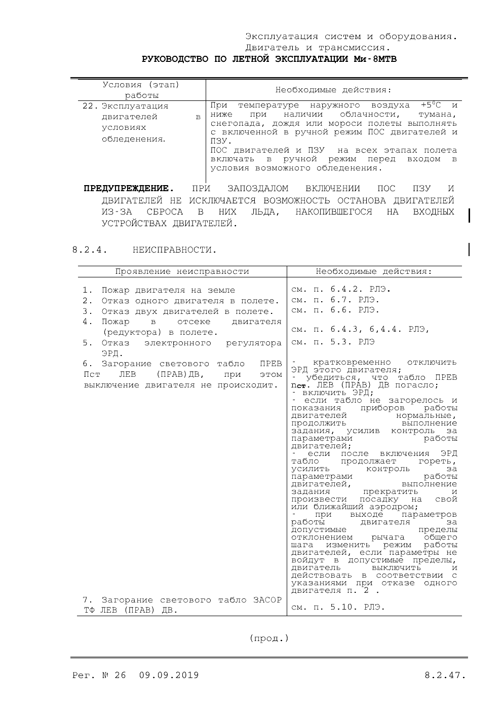

12
7
4
Ваш экземпляр · текст только на этом iPadстр. 8.2.47
ПОПУЛЯРНОЕ ЗА НЕДЕЛЮ · РЛЭ Ми-8
Что считать «условиями возможного обледенения»?
✓ инструкторТабло ПРЕВ nст загорелось, двигатель работает — что дальше?
опытПочему лёд с ПЗУ опасен при запоздалом включении?
БЕЗ ОТВЕТА
Как вы проговариваете включение ПОС на брифинге?
ПОСОБИЕ ЭКИПАЖУ · СВОИМИ СЛОВАМИ
Зима: обледенение и противообледенительные системы
Глава собирается из лучших подтверждённых пояснений сообщества. Каждая мысль ссылается на пункт РЛЭ или ФАП.
→ РЛЭ стр. 8.2.47, п. 22Правило: пособие объясняет РЛЭ, но не заменяет его. При расхождении действует РЛЭ.
ТРЕНАЖЁР · ИНТЕРВАЛЬНОЕ ПОВТОРЕНИЕ
При какой температуре наружного воздуха и каких условиях полёт выполняется с включёнными ПОС двигателей и ПЗУ?
Отдельная ветка: анонимно, но с проверенным статусом. Строгая модерация, без оскорблений и персональных данных. Примеры ниже условные.
ВАКАНСИИ
КВС Ми-8МТВ · вахта
Второй пилот Ми-8 · ввод в строй
ОТЗЫВЫ ОБ АВИАКОМПАНИЯХ